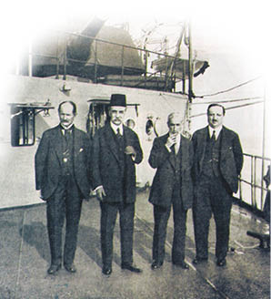
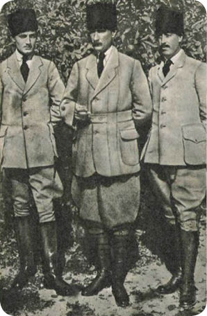
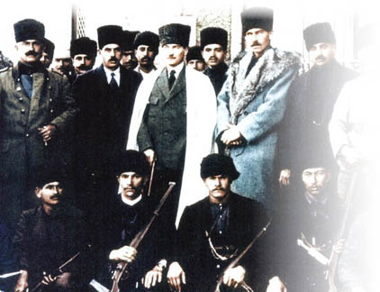

XXV : ATEŞKES VE SEVR ANTLAŞMASI
Osmanlı Devleti ile yapılan ateşkesin şartları diğer muhalif devletlere uygulananlardan daha hafif olmuştur. Osmanlılar, ordularını terhis edip savaş gemilerini teslim etmeyi kabul etmiştir. İtilaf Devletleri, Rusların ani çöküşünden sonra, Türklerin defalarca tehdit edip işgal ettiği Bakü ve Batum demiryolu hattını ele geçirme ve Anadolu’daki altı Ermeni vilayetinde herhangi bir kargaşa çıkması halinde işgal etme hakkını elde etmiştir. Fakat bu neticeler haricinde, Ateşkes, yabancı kuvvetlere, Asya’da Torosların zirvesinden Halep vilayeti ve İran sınırına, Musul’un kuzeydoğusundan Doğu Trakya ve İstanbul dahil olmak üzere Avrupa’daki topraklarına kadar, Osmanlı İmparatorluğu’nun idari işlerine müdahale etme hakkı tanımıştır. Fakat Türklerin elinde hala önemli miktarda bulunan ve ciddi zararlar oluşturabilecek silah, cephanelik ve diğer savaş maddeleriyle ilgili herhangi bir anlaşmaya varılmamıştır.

Damat Ferit Paşa (fesli) Sevr Antlaşması’nı imzalamak üzere diğer Osmanlı delegeleriyle birlikte Paris Barış Konferansı’na giderken.
On gün sonra, Fransız gemilerinin eşlik ettiği güçlü bir İngiliz donanması Çanakkale Boğazı’ndan geçerek Haliç’e demir atmıştır. İtilaf birlikleri karaya inerek İstanbul sokaklarında ilerlemeye başlamış ve İtilaf Kuvvetleri’nin askerlerinin bir kısmı, önce Ateşkes koşulları çerçevesinde, savaş mahkûmu olarak ele alınmaksızın ülkesine iade edilecek olan Alman askerlerinden oluşan bir grubun itişip kakışmasıyla bölünen işlemleri yürütmek için kıyıda beklemiştir. İtilaf Birlikleri, Osmanlı İmparatorluğu’nun içişlerine ve Türk Bakanlar Kurulu ile ilgili hususlara karışmama konusunda anlaşmaya varmıştır. Ateşkes ile ilgili süreci sonlandırmak ve ateşkes şartlarını uygulamak için Sadrazam İzzet Paşa başkanlığında kurulan ilk nâzırlar kurulu, İttihat ve Terakki Cemiyeti döneminden gelen muhafazakâr taraftarları ve bu cemiyetin eski mensuplarını içermiştir. Bu belirsizlikler, yıllar boyunca farklı rejimler altında yüksek idari görevlerde yer almış ve Londra’da elçilik yapmış olan Gazi Tevfik Paşa önderliğinde 10 Kasım’da kurulan yeni kurulda ortadan kaldırılmıştır. Tevfik Paşa, barış ve düzenin yeniden sağlanması için İtilaf Devletleri ile işbirliği yapma hususunda daha kararlı olan Damat Ferit Paşa Sadrazam olana dek bu görevi sürdürmüştür. Bu makam, Türk nâzırlar için oldukça zorludur ve dolayısıyla sürekli olarak değişimler meydana gelmiştir. Fakat bakanlar, çoğu zaman, savaşın doğurduğu sonuçların kabul edilmesi gerekliliğini anlamış, böylece cemiyetin yapısının bozulmasıyla ve adı yolsuzluklara karışmış üyelerinin cezalandırılmasıyla ilgili gerekli adımlar atılmıştır. Ateşkesten sonra uzun bir süre boyunca Türkler, İtilaf Devletleri’nin kendilerine uygulama konusunda mutabakata varacağı herhangi bir barış antlaşmasına uymaya hazırlanmıştır. Fakat Paris Barış Konferansı daha ciddi diğer problemlere sahne olmuştur. İttihat ve Terakki Cemiyeti’ne zorlukla ket vurulmuş; fakat ortadan kaldırılamamıştır; Cemiyet, Kafkaslarda Rus Bolşevikleri ve onların Bakü ve Azerbaycan’daki ve İran’ın kuzeybatı sınırındaki Tatar müttefikleriyle irtibat kurarak özellikle Anadolu’nun ücra köşelerinde direniş için canlanmaya başlamıştır. Amerika kendi kabuğuna çekilmiştir. Avrupalı İtilaf Devletleri, Osmanlı İmparatorluğu’nun akıbetiyle ilgili net bir karara varmamış ve Osmanlı’nın askerî ve sivil temsilcileri, İstanbul’da dahi, birbirinden farklı ve çoğunlukla çelişkili gayelerin peşinden koşmuştur. Yunan kuvvetlerinin, İngiliz hükümetinin, isteksiz de olsa İtilaf Devletleri’nin desteğini alarak garantilediği İzmir çıkarması her kesimden Türk halkını öfkelendirmiş; ancak aynı zamanda, büyük kuvvetlerin etkisizliğinden dolayı oluşturulmuş olan güçsüzlük izlenimini ortadan kaldırmayı başaramamıştır. Yalnızca İngiliz halkı değil İngiliz orduları da seferberliğin sona erdirilmesini istemiş, bunun üzerine, Fransızlar ve İtalyanlar tamamen kendi çıkarları için birliklerini Kilikya ve Antalya’da tutmaya devam ederken bazı İngiliz birlikleri geri çekilmiştir. Herhangi bir karışıklığın tekrar baş göstermesi durumunda, İtilaf Kuvvetleri’nin özellikle Ermeni vilayetlerini işgal etme hakkının yürürlüğe konmasına dair kimse önceden hazırlık yapmamıştır. İşgalci güçlerin tereddüdünden cesaret alan Cemiyet üyeleri 1919 yılının Ağustos ayında Erzurum’da toplanmış ve bir ay sonra Sivas’ta gerçekleşecek olan Kongre’ye resmi çağrıda bulunan Geçici Hükümet kurulduğunu ilan etmiştir. Kongre programı açıkça belirtilmiştir. “Ulusal kuvvetler ve ulusal irade” Saltanatın ve Halifeliğin korunması için Osmanlı İmparatorluğu’nun bütünlüğü ve bağımsızlığının sürdürülmesini amaçlamış ve ateşkeste düşmanlıkların sona erdirilmesi için sınırların oluşturulmasını, İtilaf Devletleri’nin bu sınırları yeni Türkiye’nin sınırları olarak tanıyacağını farz ederek özellikle “Ateşkes sınırları içindeki bölünmelere” karşı çıkmıştır.
Milliyetçiler, Ateşkes’ten sonra Erzurum valisi tayin edilen ve Birinci Dünya Savaşı boyunca askerî niteliklerini kanıtlamış olan Mustafa Kemal’de aradıkları önderi bulmuştur. Mustafa Kemal, 1908 Türk ayaklanması ve ertesi yıl Abdülhamid’in tahttan indirilmesinde İttihat ve Terakki Cemiyeti ile işbirliği yapmış en genç askerlerden biridir. İtalya ile Osmanlı Devleti arasında yaşanan savaşta, Enver Paşa’ya yardımcı olmuş ve Trablus’ta İtalyanlara karşı gerilla kuvvetlerinin oluşturulmasına destek vermiştir. Fakat Enver ile arasında anlaşmazlıklar baş göstermiş ve Enver’in kıskançlığı Mustafa’yı geri plana atmıştır. Mustafa, İngilizlerin ilk çıkarmasında Gelibolu’da bulunmuş ve Avustralya ve Yeni Zelandalıların ilerleyişini engelleyen kuvvet Mustafa’nın komuta ettiği birlik olmuştur. Ağustos ayında gerçekleştirilen Anafartalar çıkarmasından sonra, General von Sanders, İtilaf Devletleri’nin bu bölgeye yaptıkları saldırıları püskürtmek için açılan yeni cephenin komutasını da Mustafa Kemal’e vermiştir.

Mustafa Kemal Paşa
Mustafa, 1916 ve 1917 yılları boyunca Anadolu’da pek çok birliği komuta etmiş ve 1918 yılında General von Sanders ona Suriye’deki 7. Bölüğün komutasını vermiş; fakat Mustafa bölgeye ulaştığında 16.000 asker yerine ancak yarısını bulmuştur. Fakat General Allenby’nin ezici hücumuna karşı en iyi mücadeleyi veren Mustafa’nın birliği ve ne kadar beyhude olsa da Halep’te gayret göstermeye direnen Mustafa’nın bizzat kendisi olmuştur. Mustafa’nın, Osmanlı İmparatorluğu’nun yenilgiye uğradığı sıralarda, cesareti kırılmış olan birliğinden hayatta kalanların üzerindeki etkisi, Enver’in ateşkesten hemen önce İstanbul’dan kaçması sayesinde güçlenmiş ve askerlerinden geriye kalanları disipline sokmak ve aralarında birlik kurmak için elinden geleni yapmıştır. Vakit geçtikçe ve İtilaf Birlikleri Osmanlı Devleti’ne uygulanacak olan nihai barış şartlarını sonlandırmak için hiçbir çaba sarf etmedikçe, Mustafa Kemal, İttihat ve Terakki Cemiyeti’nin üzerinde kontrol sağlamaya başladığı vilayetlerde yeni cepheler kurarak direniş gösterme imkânının var olduğunu düşünmeye başlamış ve ateşkes ile birlikte İtilaf Devletleri’nin başarısızlık göstermesi ve tüm silah ile cephanenin teslimi, Mustafa’nın yalnızca eski birliklerden veya yeni askerler bulmasını sağlamamış ayrıca bu askerlerin tüfek, top ve yeterli derecede cephane ile silahlanmasına da kapı aralamıştır.
Ateşkes’in üzerinden bir seneden fazla bir zamanın geçmiş olduğu 1919 senesinin sonuna doğru İngiltere başbakanı, 18 Aralık gününde, İngiltere, Fransa ve İtalya’nın Birleşmiş Milletler’in işbirliğini daha fazla bekleyemeyeceğini ve Türk sorunuyla kendi kendilerine ilgileneceklerini bildirmiştir. Bu uzun gecikmenin sonuçları ise hem İstanbul’da hem de Anadolu’da hissedilmeye başlamıştır. 5 Ekim tarihinde, Damat Ferit Paşa, “Sulh Bakanlığı” olarak şekillenen, fakat aslında Milliyetçilik akımına eğilimi olan yeni bir Bakanlar Meclisi kurmuş ve Ali Rıza Paşa’nın sadrazam olması için gerekenleri yapmıştır. Türk Parlamentosu’nun yeni seçimlere gitmesini öngören İmparatorluk İradesi tamamen Milliyetçilerden oluşan bir Meclis’in oluşumuyla sonlanmıştır. Mustafa Kemal de Meclis’e seçilmiş; fakat İstanbul’daki mevcut koşullar üzerine kurulu bir Meclis’in “ulusun iradesini” yansıtamayacağı sebebiyle hem Meclis’te yer almayı reddetmiş hem de seçilmiş olan diğer yandaşlarının Meclis’e girmesini engellemiştir. Başka sebeplerden dolayı da bu yeni parlamento Türk halkını temsil etme yetkisine sahip olamamıştır; seçmenlerin % 85’i oy kullanmamış, İtilaf Devletleri tarafından işgal edilmiş ve ne koşulda olursa olsun tekrar Osmanlı İmparatorluğu’na dönmeyecek olan şehirlerde seçimler yapılmamış ve savaştan önce 256 olan sayıya karşılık yalnızca 132 mebus ülkeye dönmüştür. Sultanın konuşması üslup ve içeriği açısından ılımlı olmuş, İzmir ve Kilikya’daki yabancı birliklerin varlığına karşı çıkmasına ve Osmanlı Devleti’nin bir ulus olarak ayakta kalması gerekliliğinde ısrarcı olmasına rağmen ülkenin idaresinde geniş kapsamlı reformlar yapılması gerektiğine değinmiş ve ülkeyi savaşa sürüklemiş olanların hem halka hem de yasalara danışmadan bu kararı vermiş oldukları için hanedanını ve milletini bu karardan dolayı mesul tutmayı reddetmiştir. Bu esnada, başkentte sultana değil Mustafa Kemal’e hararetli tezahüratların yapıldığı ve bütün Milliyetçilerin de desteklediği birtakım gösteriler vuku bulmuştur. Ali Rıza başkanlığındaki Meclisi-i Mebusan’da harbiye nâzırı olan Cemal Paşa’nın dahi Mustafa Kemal ile gizlice çalıştığı açığa çıkmış, bunun üzerine Müttefik Birlikler Yüksek Komiserliği tarafsızlıklarını bir kenara bırakarak Cemal Paşa’yı görevinden alınmaya mecbur kalmış; fakat yine de kısa bir süre sonra, Mustafa Kemal’in gerçekleştirilmesi için büyük çaba sarf ettiği, İçişleri, Dışişleri ve Adalet Bakanlıkları Milliyetçilere bırakılarak Meclis’te yeniden yapılandırılmaya gidilmiştir. Mustafa Kemal, Geçici Hükümet’i Sivas’tan, İstanbul’a daha yakın olan Ankara’ya taşımış ve nüfuzu yavaş yavaş Bursa ve Marmara ile Boğaziçi’nin Asya yakasına doğru yayılmaya başlamıştır. Doğu Anadolu’da Mustafa Kemal’in birlikleri Kilikya’da Fransızlarla çarpışmış ve Fransızları Maraş’tan ihraç etmiştir. Yunanlarla İtalyanların Arnavutluk ve On iki Adalar üzerinde fikir ayrılığı yaşamalarından ötürü Mustafa Kemal İtalyanları gizli bir güç olarak gördüğü ve İzmir’e yakın vilayetlerde Yunan kuvvetlerine güç kazandırmamak için İtalyan birliklerine saldırılmamıştır.
Türklerin hedefleri, İngiliz İmparatorluğu içinde coşkulu taraftarlarca desteklenmiştir. Abdülhamid, Osmanlı Halifesi olarak, kendi egemenliği altında olsun veya olmasın bütün Müslümanların ruhanî bağlılıklarını talep ettiğinde İslamcılık akımı Hindistan’da tamamen sonuçsuz kalmamıştır. Hintli Müslümanların yalnızca çok azı Kırım Savaşı’ndan önce Osmanlı İmparatorluğu’nu veya sultanı tanımış ve Sivastopol Savaşı’nda İtilaf Kuvvetleri Osmanlı Devleti’ni kurtarmış olmalarına rağmen bir yıl sonra Müslümanların büyük bir role sahip olduğu Paris Antlaşması’nda İtilaf Kuvvetleri Hindistan’da zorlu bir isyanla karşılaşmıştır. Otuz yıl sonra, Ruslar İstanbul’a dayandığında, İngilizler Hintli birlikleri Türklere destek vermeleri için Avrupa’da Malta’ya kadar getirmiştir. Fakat Abdülhamid’in yöntemleri İngilizlerle arasını açtığında, İngilizlerin desteğiyle kazandığı itibarı onlara karşı kullanmaya tereddüt etmemiştir. Abdülhamid, Hindistan’da İslamcılık akımına dönmüş; fakat egemenliği boyunca çok az mesafe kat etmiş Aligarh Müslüman Üniversitesi’nin kurucusu ve Osmanlı padişahının Halifeliğiyle ilgili açıkça mücadele veren Seyid Ahmed Han kadar etkili olamamıştır. Özellikle Balkan Savaşları esnasında yaşanan Türk ayaklanmalarına kadar, İstanbul ile Hindistan Milli Kongresi’ne bağlı Hintli Müslümanlar okulunun siyasetçileri arasında yakın ilişkiler kurulmuştur. Birinci Dünya Savaşı’nın patlak vermesi üzerine Hindistan’ı ezip geçen vatansever hareket dalgası küçük bir grup isyancı dışında Türk yandaşlarının mahkum edilmesine sebep olmuştur. Bu mahkumların arasında adı en çok çıkmış olan iki isim Mehmed Ali ve kardeşi Şevket Ali, Hint Hareketi Savunması çerçevesinde gözetim altında tutulmaya mahkum edilmiştir. Fakat savaş devam ettikçe ve Hindistan’daki ‘siyasî görüşlüler’ sınıfı Hindistan’ın sadakatine ödül olarak daha büyük anayasal reformları çıkardıkça Müslümanlar, Hindistan Kongresi müfritleriyle daha sıkı bir işbirliği içine girmiş ve onların talepleri üzerine Özerk Yönetim’e müdahil olmuştur. Bunun üzerine, Hintlilerle Ateşkes’ten sonra yeni Müslüman dostlarıyla kendilerini özdeşleştiren, Osmanlı İmparatorluğu’nun özellikle de sultanın Halifelik unvanının akıbetine dair ilgi duyan Müslüman hemşehrileri arasında var olan azıcık sevgi de yok olmuştur. Paris Barış Konferansı’na katılan her iki görüşten iki Hintli temsilci ve Hindistan devlet bakanı, İtilaf Devletleri ile birlikte Osmanlı İmparatorluğu’nun hedeflerine destek olmayı taahhüt etmiştir. Fakat isyancılar bununla yetinmemiştir. ‘Halifelik Komitesi’ adı altında Müslüman ve Hintlilerden oluşan müşterek bir komite kurulmuş ve 1919 yılının başlarında, savaştan önce İstanbul’a gitmiş, İttihat ve Terakki Cemiyeti ile yakın ilişkiler kurmuş ve de sözcüsü Müslüman olan bir heyet Kral Naibi’nin seçilmesini beklemiş ve Hintli Müslümanlar adına Halifeliğin manevî bir güç olarak sürdürülmesinin kendi inanışları için hayati öneme sahip olduğunu ve dolayısıyla Büyük Britanya tarafından sağlanan Osmanlı İmparatorluğu’nun bütünlüğünü, Müslümanların Arap yarımadasındaki hakimiyetini veya sultanın Kutsal Topraklar’ı himayesini engelleyecek bir barışa razı olmayacaklarını bildirmiştir. Kral Naibi bu duruma uzlaşmacı bir şekilde yaklaşmış; fakat başka bir heyet aynı talepleri İngiliz ve diğer İtilaf Devletleri hükümetlerine bildirmek adına Avrupa’ya gönderilmiştir. Bu heyetin tavrından, heyetin, Hindistan Hükümeti’nin nihayet serbest bıraktığı Mehmed Ali tarafından yönlendirildiği anlaşılmaktadır. Mehmed Ali’nin savaş başlangıcında aldığı ev hapsi, Afganlarla casus ilişkiler içine girdiğine inanıldığı için kısa süre önce gerçek mahkumiyete dönüştürülmüştür. Mehmed Ali’nin heyeti Londra’ya ulaştığında, başbakan dinî etkenlerin siyasî konulara aracı edilmesine karşı çıkarak sözcülerine ağır bir cevap vermiştir.
Fakat diğer yandan, Lloyd George, 26 Şubat’ta Avam Kamarası’nda yapmış olduğu bir konuşmada, 1918’de, İtilaf Devletleri’nin Türkleri Anadolu ve Trakya’daki evlerinden mahrum etme arzularının olmadığına, Trakya’nın yalnızca bir güvence olduğuna ve barışın sağlanması için kendilerine sunulan bir teklif olmadığına dair yapmış olduğu açıklamaya değinmiştir. Bu güvence, İtilaf Devletleri’nin Türklere vermiş oldukları diğer güvencelerle o denli ters düşmüştür ki bir daha Türklerin kötü yönetimine maruz kalmamışlardır. Fakat İngiliz Başbakan bu durumu hiç düşünmemiştir.
İtilaf Birlikleri, 17 Şubat tarihinde, Yüksek Temsilcilerine, Türk dışişleri bakanını İstanbul’un yeni Türk Devleti’nin başkenti olarak kalacağına dair bilgilendirmeleri konusunda talimat vermiştir. Anadolu’daki gayrimüslim halkın güvenliğinin sağlanamaması veya Türk topraklarını işgal etmiş olan İtilaf Kuvvetleri’nin veya Yunan ordularının saldırıya uğraması durumunda kararın değiştirilebileceği hakikati de eklenmiştir. Bu uyarının ne denli gerekli olduğu, Milliyetçilerin Kilikya’daki Fransızlara saldırı haberleri Avrupa’ya ulaştığında anlaşılmıştır. Fakat ne bu uyarı ne de Türklerin İstanbul’u ellerinde tutmaya devam edebileceklerine dair yapılmış olan bildiri çok fazla etki yaratmıştır. İsyan devam etmiş ve daha da şiddetlenmiştir. Türk Milliyetçiler, sultanı İtilaf Devletleri’ne yaranmaya çalıştığına dair söylentilerden dolayı tahtından indirmeyi düşünmüştür. İstanbul Meclisi-i Mebusan dahi hararetli konuşmalara sahne olmuştur. Diğer bir taraftan, farklı Hıristiyan toplulukları ümitsiz yakarışlarını İtilaf Devletleri’ne ulaştırmış, bazı kişiler, Milliyetçilerin Maraş civarlarında çok sayıda insanı öldürdüğünü iddia etmiştir. Üç Mart tarihinde Ali Rıza Paşa kabinesi görevi bırakmış ve yerine Salih Paşa’nın sadrazamlığı altında aynı yapıda bir kabine kurulmuştur. On Mart tarihinde, Lord Curzon Avam Kamarası’nda, “uyum içinde hareket eden İtilaf Kuvvetleri, İstanbul’da hiçe sayıldığı ve diğer bölgelerde işkenceye uğradığı bir duruma daha fazla boyun eğemez” demiştir. Altı gün sonra, İtilaf Devletleri adına hareket eden General Milne Türk Harbiye Nâzırlığı, Deniz Kuvvetleri Komutanlığı ve haberleşme araçlarını ele geçiren bir birliği İstanbul’a çıkardığında Lord Curzon’un sözleri eyleme konmuştur. Mustafa Kemal’in yandaşlarından bazıları tutuklanmış, bunlardan Meclisi-i Mebusan üyesi olan iki kişi protestolar üzerine serbest bırakılmıştır. Meclis, hem Milliyetçilerle hem de İtilaf Birlikleri’yle müzakere yapmıştır. Fakat nihayetinde İtilaf Birlikleri tarafından gösterilen sert tutum üzerine padişah duruma el koymuştur. Salih Paşa’nın kabinesini dağıtmış, Damat Ferit Paşa’yı bir kez daha sadrazam seçerek Milliyetçilerin ‘isyancı’ olduğunu bildiren bir ferman çıkartmıştır. Aynı zamanda, şeyhülislamın da bu kişileri ‘İslam hainleri’ ilan etmesi emredilmiştir. Ferman, boyun eğen herkesin rütbesini geri verme vaadinde bulunurken, elebaşlarının da acımasız bir şekilde cezalandırılmasını emretmiştir. Mustafa Paşa, Ankara’dan, ‘kâfirlerin’ baskısı altında oldukları için sultanın ve nâzırların otoritesinin zayıfladığını bildirmiş, Trakya’daki Milliyetçi eylemlerin başında bulunan teğmenlerinden biri olan Cafer Tayyar Bey de Edirne’den benzer bir bildiride bulunmuştur. Bu durum, İstanbul’daki padişahın hükümeti ile diğer vilayetlerdeki Milliyetçi isyanlar arasındaki bir çatışmaya dönüşmüştür. Mısır ve Hindistan’daki şiddetli isyanlarla Suriye’deki nahoş olaylar Müslümanlar arasındaki sıkıntının ne denli geniş çaplı olduğunu göstermiştir. İtilaf Devletleri, nihayetinde, Nisan ayının sonunda San Remo’da düzenlenen Yüksek Meclis toplantısında Osmanlı Devleti’ne uygulanacak olan barış hükümlerini belirlemiş ve 10 Haziran gününde Türk Diplomasisi’nin önderi olan Tevfik Paşa başkanlığındaki bir heyetle Paris’te barış anlaşmasını imzalamıştır.
Lloyd George
Sultanın büyük bir ismin gölgesinde İstanbul’da kalması bir kenara, barış şartları fazla acımasız olmuştur. Osmanlı İmparatorluğu’nun 1914 yılında 613.000 mil kare olan toprakları ve ortalama 20 milyon olan nüfusu bu anlaşma çerçevesinde 175.000 mil kare toprak ve 8 milyonluk bir nüfus ile ikinci sınıf bir Asya Devleti haline gelmiştir. Balkan Savaşları’ndan sonra Osmanlı İmparatorluğu’nun Trakya’da elinde kalan topraklar, Çatalca sınırına dayanmış olan Yunanlara verilmiş, Osmanlıların elinde yalnızca İstanbul ile iç bölgeden birkaç millik bir toprak ve şehrin su ihtiyacını karşılaması açısından gerekli olan Terkos Gölü çevresi kalmıştır. Kurulacak olan yeni Türk Devleti Asya’da Anadolu ile yalnızca Türk halkının yaşadığı veya Türk nüfusunun çoğunlukta olduğu yerlerle sınırlandırılmıştır. Sınırlarının Birlemiş Milletler başbakanının tahkimiyle korunacağı bağımsız bir Ermenistan, Trabzon, Erzurum, Bitlis ve Van vilayetlerinde kurulacak, güneyde ise bağımsızlığını tamamlamak için gerekli haklara sahip olan özerk bir Kürt Devleti Kürtlerin yoğunlukla yaşadığı yerlerde, Fırat’ın doğusu, yeni Ermeni Devleti’nin güneyi ve yeni Türk Devleti’nin güney sınırının kuzeyinde kurulacaktır. İzmir’de, Temsilciler Kurulu’ndan Milletler Cemiyeti’nin talebiyle ve halk oylaması sonucuna göre, Yunan Krallığı’na tamamen dahil edilene kadar beş yıldan az bir süre için olmamak kaydıyla mevcut vaziyette Türk bayrağı altında bırakılması şartıyla 100 millik bir sahille birlikte önemli bir toprak parçası ve iç kısımlara doğru uzanan bazı bölgeler Anadolu’daki başlıca liman ile birlikte Yunan yönetimine bırakılacaktır. Fakat şartlar bununla da bitmemiştir. Hem savaş hem de barış zamanlarında bahsi geçen sularda denizciliği kalıcı bir şekilde özgür hale getirmek için Çanakkale, Marmara ve Boğaz kıyılarındaki topraklar uluslararası bir komisyonun idaresi altında kendi bayrağı, bütçesi ve ayrı bir yapılanma ile koruma altına alınacaktır. Avrupa’da, yetkisini, bu özel komisyona devredecek olan kıyı gücü Yunanistan olmuş; fakat Anadolu yakasındaki daha büyük kısımda Ege Denizi’nde Karadeniz’e doğru bulunan Edremit Körfezi’ndeki Türkler bu yetkiyi devretmiştir. Yeni Türk Devleti’nin kalan kısmı için ise Türklerin bağımsızlığını maddî kısıtlamalara maruz bırakan hükümler şart koşulmuştur. Bu hükümler çerçevesinde, Türk ordusunun sayısı 50.000 askere ve sultanı koruyacak olan muhafız sayısı ise 800’e düşürülmüştür. Türk ordusunun ihtiyacı olan savaş malzemeleri, silah ve cephaneliğin sayısını İtilaf Devletleri belirleyecektir. Takviyeler tahrip edilmiş veya parçalanmıştır. Herhangi bir Türk donanması veya hava kuvvetleri olmayacaktır. Tüm bu tedbirler, İtilaf Birlikleri arasında kurulan bir komisyonun kontrolü altında uygulanacaktır. Yeni Türk Devleti’nin de yalnızca istişare yetkisine haiz bir temsilci bulundurmasına izin verileceği diğer bir uluslararası komisyon, uygulamada mali ve ekonomik bir vesayet oluşturacak geniş kapsamlı yetkilerin verildiği Türk Devleti’nin mali durumunun iyileştirilmesi için tedbir alma hakkına sahip olacaktır.
Ayrıca, Türk Devleti’nin bütün Arap vilayetlerini İtilaf Birlikleri’ne teslim etmesi, özellikle Hicaz Krallığı’nın bağımsızlığı, İngiltere’nin Mısır ve Sudan’ı mandası altına alması, Kıbrıs’ın İngiltere topraklarına eklenmesi, Tunus ve Fas’ın Fransız sömürüsü haline getirilmesi, İtalyanların Trablus üzerindeki haklarını tanıması, Ege Denizi ve Akdeniz’deki adalarını sırasıyla İtalya ve Yunanistan’a vermeyi kabul etmesi ayrıca Türkler tarafından temlik edilmiş olan bütün toprakların nihai kontrolü için İtilaf Devletleri arasında yapılmış olan bütün anlaşmalara rıza göstermesi gerekecektir; aslında tüm bunlar Osmanlı’yı ilgilendiren ve halihazırda ortaya konmuş olan hakikatlerin resmen tanınmasından daha öte bir şey değildir.
Bu anlaşmayı kabul etmek imparatorluğun yok olmasını kabul etmek anlamına gelmektedir. Sultan ve Bakanlar bu anlaşmaya, özellikle de Doğu Trakya’nın Yunanistan’a verilmesine ve Anadolu’daki en kıymetli topraklarla dış ticaret için kullanılan en önemli limanın devrini de içerdiği için İzmir bölgesinin Yunanistan’a verilmesini öngören düzenlemelere karşı çıkmıştır. Bozguna uğradıkları savaşlarda kaybettikleri topraklardan feragat etmeye razı olan Osmanlıların, savaşın sonunda hala ellerinde tuttukları toprakları galip gelen İtilaf Birlikleri’ne veya hatta İtilaf Devletleri ile aynı safha geçmiş olan Araplara değil de ancak ateşkesten uzun bir süre sonra Osmanlı topraklarına ayak basmış olan Yunanlara vermek gururlarına dokunmuştur. Ermeni Devleti’nin resmen tanınması şartı bile onlar için daha az onur kırıcı olmuştur. Türkler ayrıca, yeni Türk Devleti’nin, Boğazların ve kıyı şeritlerinin idaresini gerçekleştirecek olan Uluslararası Komisyon’a müdahil edilmemesini haklı olarak adaletsiz bulmuş ve mali ve ekonomik özgürlüğüne getirilen sınırlamaların devleti millî varlığından mahrum edeceğini bildirmişlerdir. 30 Haziran tarihinde verilen ilk cevapla, söz konusu ağır koşullar iyileştirilmediği takdirde Türk hükümetinin anlaşmayı imzalamayacağı belirtilmiştir. Milliyetçi akımdan uzak duran ılımlı Türkler dahi barış koşullarının kabul edilemez olduğunu bildirmiş ve İstanbul’da gerçekleştirilen protestolar ve toplantılarla anlaşmanın reddedilmesini dile getirmiştir.
Ankara’da bulunan Mustafa Kemal ve Edirne’de bulunan Cafer Tayyar sonuna kadar mücadele etmeye dair ant içmiş ve sultan ile nâzırları, Türk Devleti ve İslam’a ettikleri ihaneti tamamlamayı göze almaları halinde, kanun dışı etmekle tehdit etmişlerdir. Milliyetçi akım yeni bir ivme kazanmış ve bütün bölgelerde daha güçlü bir hale gelmiştir. Akım, Bursa ve Marmara kıyılarına dek ulaşmıştır. Milliyetçi birlikler, İzmit’teki İngiliz ileri karakol mevkiine saldırmış ve bir İngiliz deniz müfrezesi bu bölgedeki Milliyetçi saldırılarını gerçekleştirecek olan bütün Türk birliklerini yok etmek amacıyla acilen Çanakkale’nin Asya kıyılarına ulaşmıştır. Fransızlar tekrar Kilikya’da baskın hale gelmiştir. Fransızlarla Mustafa Kemal arasında yapılmış olan ateşkes yenilenmiş; fakat daha sonra bir Fransız müfrezesine saldırıp teslim olmaya zorlayan Milliyetçiler tarafından çiğnenmiştir. Fransızlar, yanlarına Ermeni kadın ve çocukları da alarak Sis ve Antep’i boşaltmıştır. Geride kalanlar ise büyük direnişler göstermiştir. Küçük sayıdaki İtilaf kuvvetlerinin kapladığı veya Yunanların işgal ettiği İzmir bölgesi dışında Milliyetçiler Anadolu’da baskın bir haldedir. Kuzeyde, İtilaf Devletleri’nin Türklerle yapılmış olan barış anlaşması çerçevesinde oluşturduğu Erivan Ermeni Cumhuriyeti’nin dış dünyayla olan tüm bağlarının kesildiği yerde, İngiliz karargâhının Batum’u beklenmedik bir şekilde terk etmesinden sonra Milliyetçiler Kafkaslar’daki Bolşevikler ve onların Moskova’daki hükümdarlarıyla daha yakın ilişkiler kurmuştur. General Townsend’i Kut ve Nouri’de şartlı teslime zorlamış olan amcası ve 1915 yılında Mısır’a karşı Senusî akımını kurmaya çalışan üvey kardeşiyle birlikte, Azerbaycan Bolşevik Cumhuriyeti’nde Sovyet Bakü’yü desteklediği düşünülen Enver Paşa Erivan’daki Ermenilere göz dağı vermiş ve hatta onlara saldırmıştır. Ankara’da bulunan Mustafa Kemal, 4 Haziran tarihinde Milliyetçi Cemiyet’in toplantısında, Moskova’da Sovyet hükümetinden, Türk Milliyetçileri ile ilişkiler kurma ve her iki ülkeyi de tehdit eden emperyalistlere karşı verilen mücadelelerine destek olma gayelerini dile getiren bildiriyi duyurmuştur.
İtilaf Birlikleri, özellikle de İngilizler, geri çekilme ve seferberliğin sona erdirilmesini o denli ileriye götürmüştür ki, bunu istemelerine rağmen, Milliyetçilere aciliyetin zorunlu hale geldiği bir ders vermek için gerekli olan yeterli kuvvete daha fazla sahip olmamışlardır. Barış koşullarının uygulanması için yalnızca Milliyetçilere şiddetli bir darbe vurulması gerekmemiş ayrıca İtilaf Devletleri’nin sabrının sınırının olduğunu İstanbul’un anlaması gerekmiştir. Saldırıya hazır ve istekli bir ordusu olan Yunanlar tek başlarına gerekeni yapamamıştır. İtilaf Birlikleri, kısa bir süre içinde işe yarar bir cevap vermiş olan M. Venizelos’a danışmıştır. Venizelos, Yunan ordusunu İtilaf Birlikleri’nin hizmetine vermiştir. Bu hareketin sınırları, Hythe ve Bolonga’da gerçekleştirilen Başbakanlar Konferansı’nda belirlenmiş ve bir an önce uygulamaya geçirilmiştir. M. Venizelos, operasyonların hızlı ve nihai olacağına dair yükümlülüğü üstlenmiştir. Bu sözünü de yerine getirmiştir. Mustafa Kemal’in, Akhisar ve İzmir’in yaklaşık 100 mil doğusunda bulunan Alaşehir arasında topladığı birlik 8000 askeri şehit veya esir bırakarak, 23 Haziran tarihinde yola çıkmış; fakat durmak bilmeden takip edilmiş ve Uşak’tan ihraç edilmiştir. Tüm bunlar, Yunanların işe koyulmasının ardından on gün içinde gerçekleştirilmiş ve M. Venizelos 7 Temmuz tarihinde, söz konusu istikametteki hedeflerine ulaşmış olan Yunan askerî operasyonlarının durdurulduğunu İtilaf Birlikleri’ne bildirmiştir. Bu esnada, silahlarıyla limanı Milliyetçiler için savunulamaz bir hale getiren İngiliz donanması kisvesi altındaki diğer bir Yunan birliği Marmara’da Mudanya’ya çıkarma yapmıştır. Burada daha az bir direnişle karşılamışlar ve Mustafa Kemal’in, batıl inanışları olan halkın gözlerinde ikinci bir Osman’ın itibarına erişmesini sağlayan, Osmanlı hanedanının beşiği olan Bursa’yı 9 Temmuz gününde ele geçirmişlerdir. Yunanlar, daha sonra, Mustafa Kemal’in Doğu Trakya’daki teğmenini bozguna uğratmak üzere yola koyulmuştur. Yunan ordularınca saldırıya uğrayan Milliyetçiler güçlükle mücadele etmiş ve beş gün içinde Edirne’ye Yunan bayrağı asılmış, Cafer Tayyar paniğe kapılmış askerlerinin kaçmasına neden olarak aşağılayıcı bir şekilde esir alınmıştır.
M. Venizelos
Yunanların başarıları, Anadolu’nun kuzey ve doğu kesimlerindeki Milliyetçi direnişlerinin mevkilerini etkilememiş fakat İstanbul’da büyük izler bırakmıştır. İtilaf Birlikleri birbirleriyle aynı safta yer almayı ve sebatlı olmayı sürdürmüştür. Yalnızca tek bir noktada Türk Devleti’ne izin vermeyi kararlaştırmışlardır. Boğazlar için kurulmuş olan Uluslararası Komisyon’da, mantıklı olarak, Türkiye’nin temsilci bulundurmasına izin verilmiştir. Türklerin barış koşullarını imzalamayı kabul etmesi için verilen sürenin uzatılmasına dair taleplerine cevaben İtilaf Devletleri, Sultan’a İstanbul’u elinde tutma izninin verilmesinin iyi hal üzerine gerçekleştirildiğini, fakat bunun değiştirilebileceğini hatırlatmıştır. Bunun üzerine sultan meclisi toplamış ve nihai kararı bildirmiştir. Yalnızca tek bir isim, her şeye rağmen, İtilaf Devletleri’nin kararının reddedilmesini desteklemiştir. Türk Barış Heyeti bir kez daha İstanbul’dan Fransa’ya yola çıkmış ve 10 Ağustos tarihinde Birinci Dünya Savaşı’nın resmen sonlandırılması için gerekli olan nihai anlaşmayı Sevr’de imzalamıştır.
